Case Study
Reranding & Marketing
As Woodforest expanded into new markets, I led brand and marketing work that helped new branches feel immediately familiar and trustworthy. The program included brand guidelines, in-branch and out-of-home signage, and a scalable marketing system across print, digital, and environmental touchpoints.
Context
Branch expansion is a brand moment. Customers in new markets decide quickly whether a bank feels credible, consistent, and easy to work with. This work focused on building a cohesive identity and rollout system so new locations could launch with a clear, unified experience—inside the branch and across marketing channels.
My role
I served as the Lead Designer and VP of Marketing & UX, owning end-to-end design direction and execution. I defined the creative system, produced key deliverables (guidelines + campaign assets), and partnered with stakeholders to scale the rollout across branches and channels.
The challenge
Expanding into new markets required both speed and consistency. Without clear standards and reusable assets, branch launches risked inconsistent signage, uneven messaging, and fragmented customer perception—especially across physical and digital touchpoints.
Design constraints
- Scale: assets needed to work across many branches and formats without constant redesign
- Consistency: unify in-branch, web, print, and partner-facing materials into one system
- Clarity: quick-scan messaging and hierarchy for busy retail environments
- Governance: guidelines had to be easy for teams to follow and approve
Approach
I built a brand system designed for rollout: clear rules, reusable components, and templates that could be applied across channels. The strategy prioritized brand recognition, message consistency, and practical constraints like production, placement, and readability.
- Brand framework: defined visual hierarchy, typography, color usage, and photographic style
- Guidelines: documented standards for logo usage, signage applications, and approvals
- Campaign system: created adaptable layouts for new market and feature messaging
- In-branch experience: applied brand consistently where customers make decisions—inside the store
Brand guidelines and system foundations
I developed foundational guideline content (palette, themes, usage rules) so teams could execute consistently—without slowing down launches.
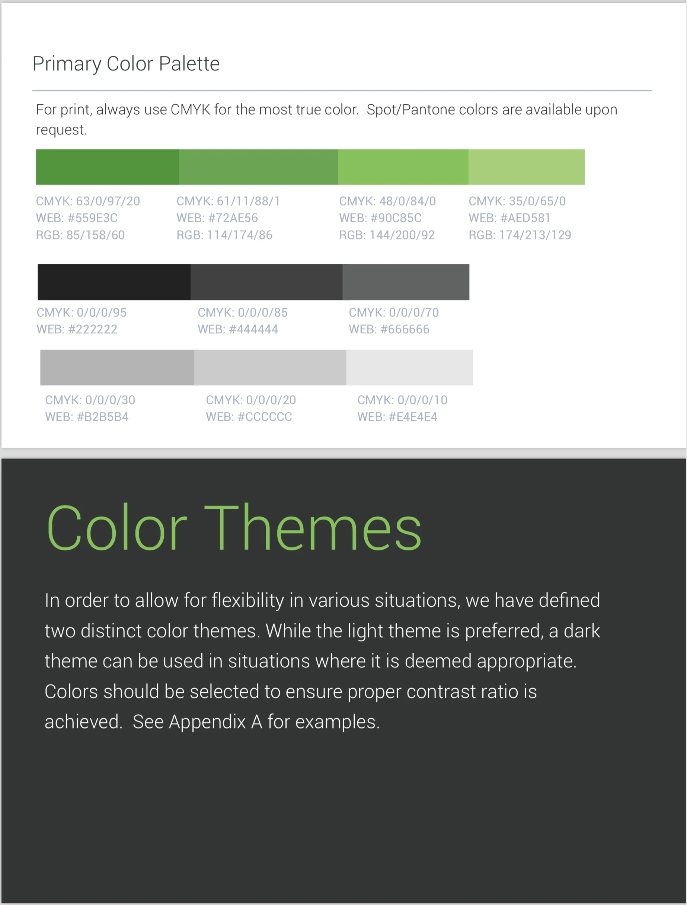
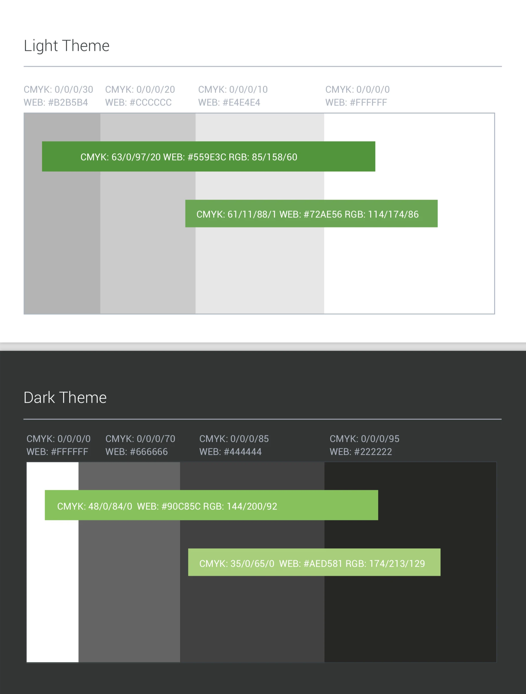
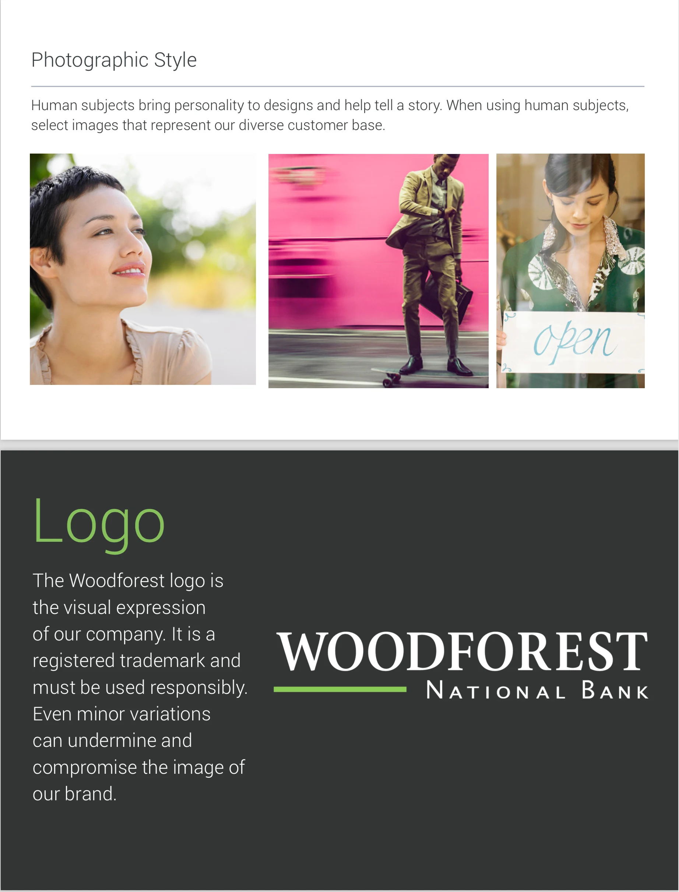
In-branch and environmental marketing
Branches are retail environments—messaging must be scannable, readable at distance, and consistent across multiple placements. I designed a set of in-branch and environmental executions that supported expansion while reinforcing brand recognition.
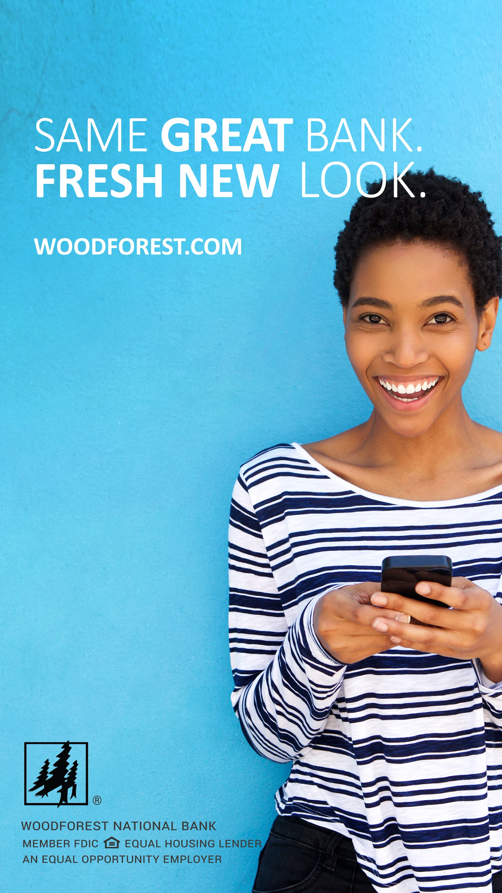
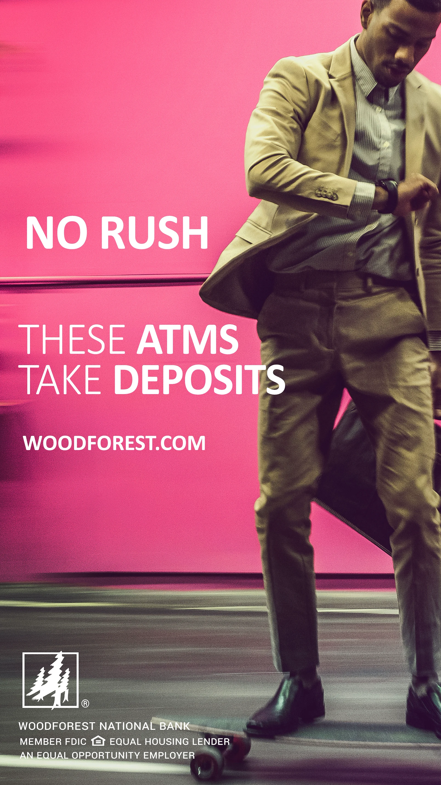
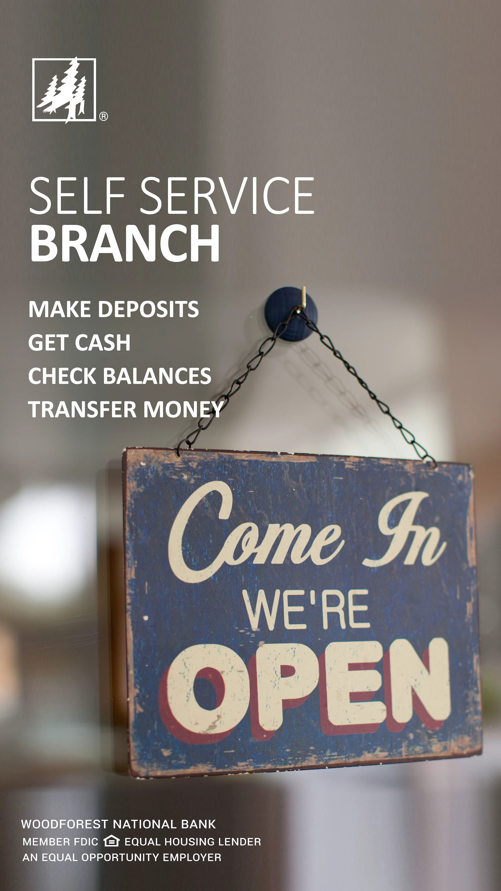
Campaign and partner-facing materials
For services that depended on partner awareness and customer education, I created campaign assets with clear steps and reassurance. The goal was to reduce uncertainty by making “how it works” immediately obvious.
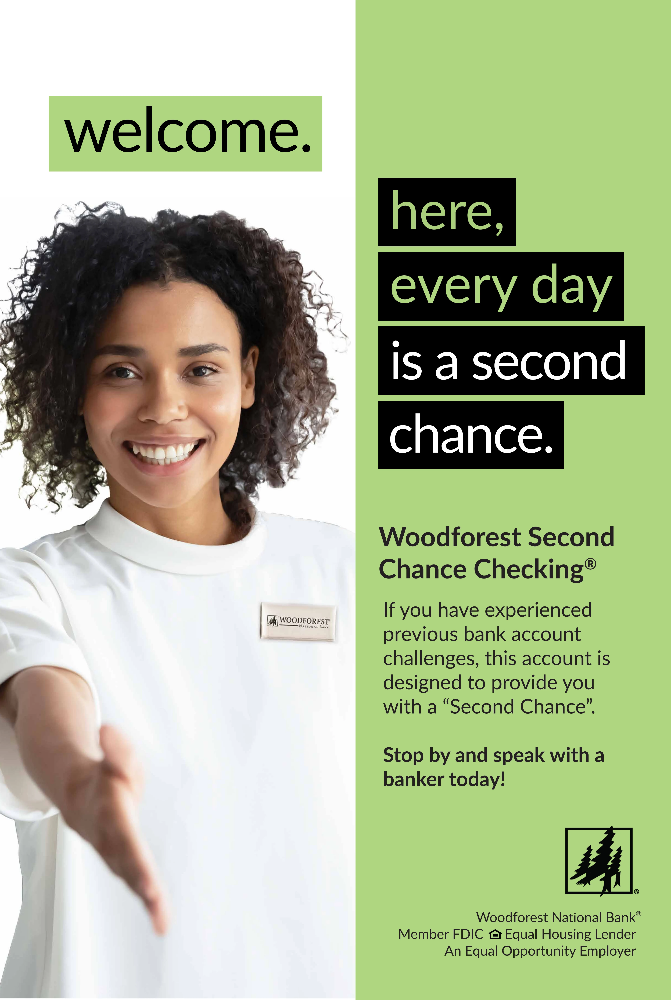
New artifacts
Additional examples of branch expansion work across digital presence, print marketing, and brand governance.
(Add these files to /assets/images/BranchExpansionandBranding/ and match the filenames below.)
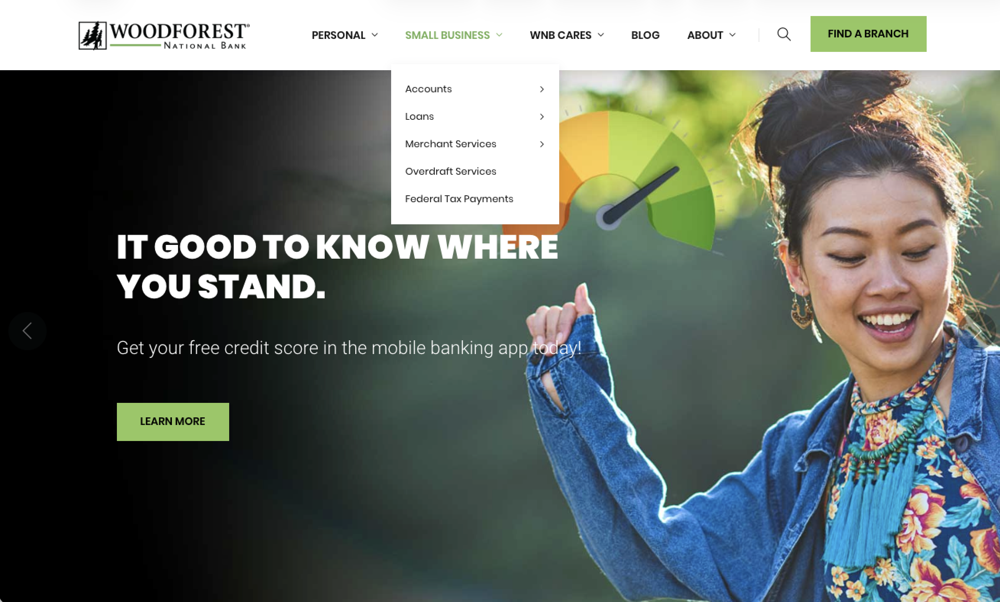
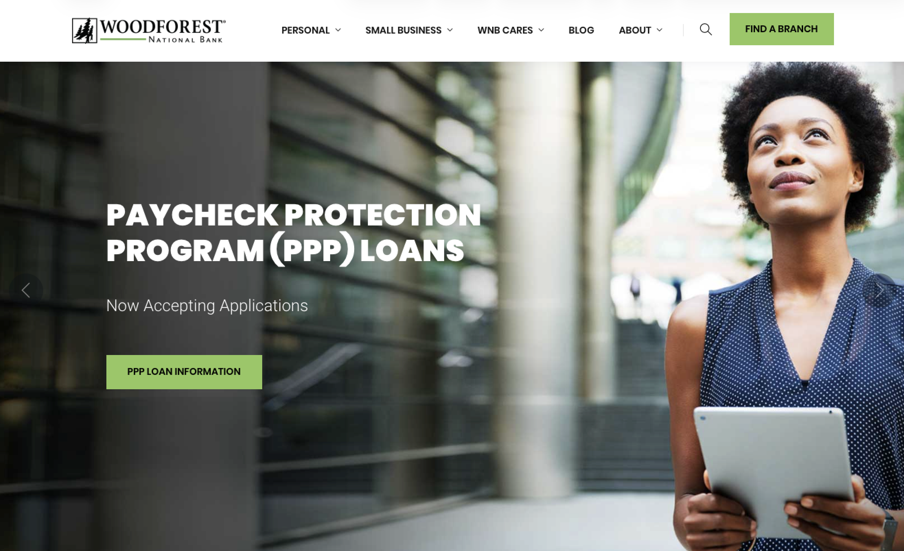
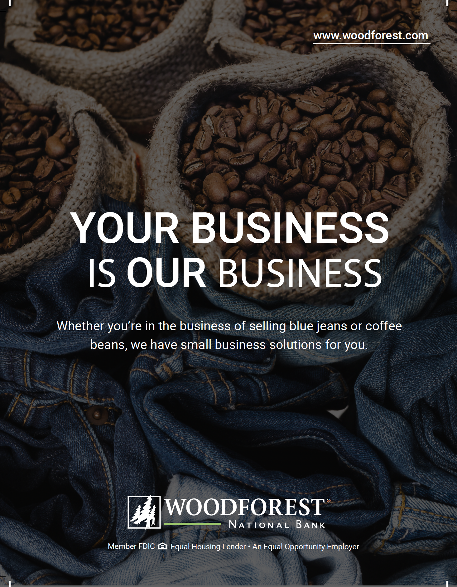
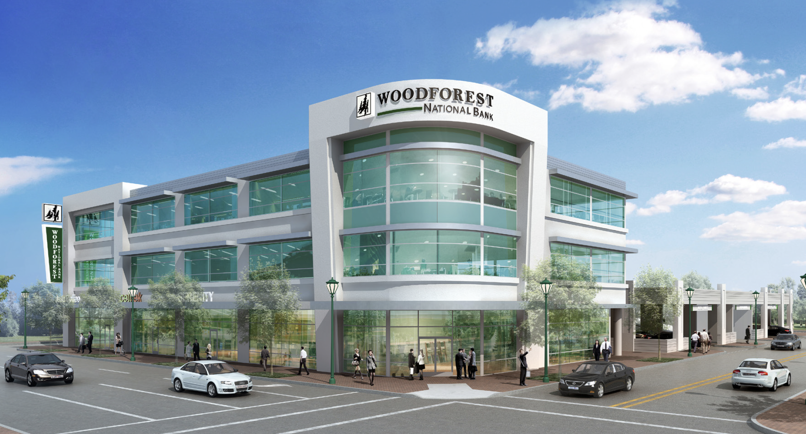


Outcome
This program delivered a scalable brand and marketing foundation for new-market expansion—clear guidelines, reusable templates, and multi-channel assets that kept the customer experience cohesive from “first impression” to in-branch interaction.
What I’d improve next
- Template library: expand modular templates for faster rollout by regional teams
- Governance: add a lightweight approval workflow and “do/don’t” quick reference sheets
- Measurement: align branch launch assets with trackable KPIs (foot traffic proxies, QR/URL tracking, campaign lift)